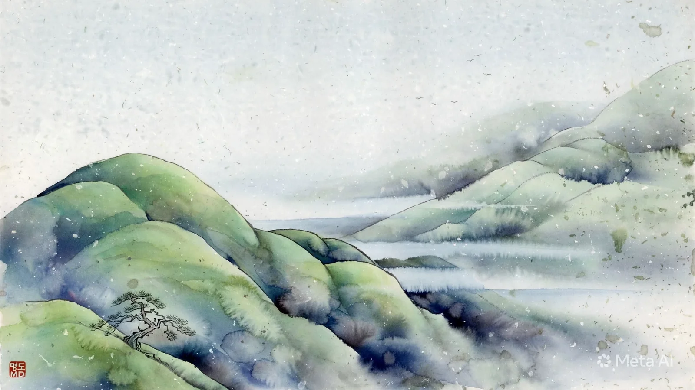

明道齋 文學新聞 · POETRY JOURNAL
시가 머무는 풍경
명도재 이명우의 창작 시 세계 詩와 그림, 그리고 삶의 이야기
시집 특집 · 물빛에 놓아둔 마음
기억을 건너, 계절을 지나
서정의 길에서 만난 39편의 시

어머니의 재봉틀에서 흘러나오던 사랑의 소리, 고산골 계곡을 따라 흐르는 물의 노래. 명도재 이명우의 시는 그 작은 울림에서 시작된다. 신천의 저녁 물빛에는 지나온 삶의 발자국이 어리고, 주리못의 핑크빛 빈 벤치에는 그리움이 앉아 있다. 바람에 흔들리는 꽃잎과 가을을 건너는 단풍, 골목에서 마주친 사람들까지 시인의 눈길이 닿으면 한 편의 서정이 된다. 그림을 그리듯 풍경을 바라보고, 마음의 결을 더듬듯 언어를 고르는 시인. 그의 시에는 자연과 인간, 기억과 시간이 서로의 어깨를 기댄다. 『시가 머무는 풍경』은 일상의 빛과 그림자를 시로 길어 올리는 명도재 이명우의 창작 세계를 펼쳐 보이는 문학신문이다.
전체 작품 목차
39편 표시 · 제목을 누르면 해당 시 지면으로 이동합니다검색 결과가 없습니다.
POETRY
시 작품을 불러오는 중입니다
시 · 명도재 이명우
작품을 불러오고 있습니다.
이 지면은 기존 『물빛에 놓아둔 마음』의 원문 데이터에 연결되어 있습니다. 원문의 행갈이와 연 구분을 유지합니다. 음성 읽기는 사용 중인 기기의 한국어 음성 엔진을 활용합니다.